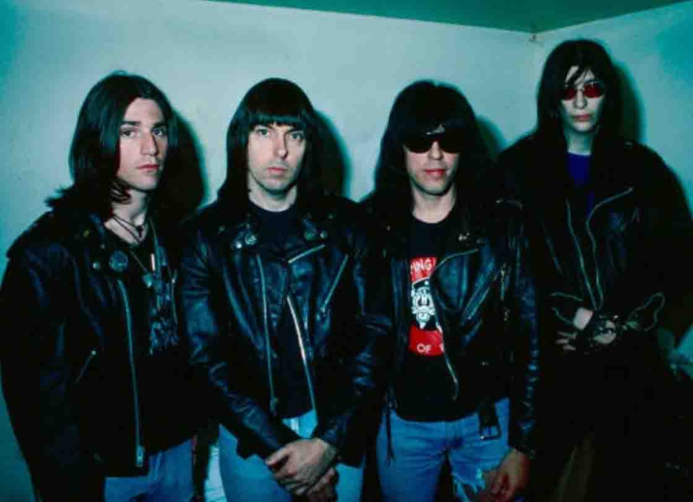

RAMONES: “Rocket to Russia” 40 Aniversario Deluxe
Los Ramones lanzaron su segundo álbum del año calendario (y tercero en general) el 4 de noviembre de 1977, culminando uno de los años más grandes en la historia del punk con Rocket To Russia. Entre los álbumes más queridos de la banda, presenta clásicos como "Sheena Is A Punk Rocker" y "Rockaway Beach" junto con sus versiones exclusivas de "Do You Wanna Dance?" y "Surfin’ Bird ". También es el último álbum grabado por los cuatro miembros fundadores, ya que el baterista Tommy Ramone se fue poco después para enfocarse en escribir y producir.
Para celebrar el 40 aniversario del álbum, Rhino lanzará dos versiones el 24 de noviembre. Contiene dos mezclas diferentes del álbum: una versión remasterizada del original y una nueva Mezcla de seguimiento del 40 aniversario por el ingeniero / mezclador original de Rocket To Russia, Ed Stasium. La colección también incluye varias grabaciones de estudio inéditas, además de una grabación inédita del concierto de la banda en 1977 en Glasgow, Escocia.
La Edición Deluxe se producirá en una edición limitada y numerada y viene empaquetada en un libro de tapa dura de 12 x 12. Junto con la música, el set también presenta historias sobre la banda del fundador de Sire Records, Seymour Stein, detalles sobre cómo hacer el álbum de Stasium y extensas notas del famoso escritor de música y cofundador de la revista Creem, Jaan Uhelszki.
El primer disco de la Edición Deluxe presenta una versión remasterizada de la mezcla estéreo original para Rocket To Russia, más la Mezcla de seguimiento de aniversario 2017 creada por Stasium, que proporciona una versión básica del álbum y una lista de pistas diferente de El original de 1977. La mezcla de seguimiento de aniversario 2017 también aparece en el LP que acompaña a la Edición Deluxe.
Stasium proporciona algunos detalles sobre la nueva Mezcla de seguimiento en las notas del conjunto: "Al armar esta nueva Mezcla de seguimiento, decidí incluir las versiones de 'No me importa' y 'Es un largo camino de regreso a Alemania', ya que fueron grabados durante las sesiones de Rocket To Russia en Mediasound, y son tomas completamente diferentes que nunca antes se habían escuchado. "Sheena" se ha omitido, ya que se grabó en una sesión totalmente diferente unos meses antes, entre los álbumes de Leave Home y Rocket To Russia ".
Se encuentran dos docenas de grabaciones raras e inéditas en el segundo disco, incluidas mezclas aproximadas de sesiones en Mediasound y The Power Station. También hay una versión inicial de "Needles And Pins" con Tommy en la batería, la mezcla única del lado B de "Babysitter", una versión alternativa de "It's A Long Way Back To Germany" con Dee Dee en la voz, una promoción de radio original con Joey Ramone y más.
Se encuentran dos docenas de grabaciones raras e inéditas en el segundo disco, incluidas mezclas aproximadas de sesiones en Mediasound y The Power Station. También hay una versión inicial de "Needles And Pins" con Tommy en la batería, la mezcla única del lado B de "Babysitter", una versión alternativa de "It's A Long Way Back To Germany" con Dee Dee en la voz, una promoción de radio original con Joey Ramone y más.
Lo más destacado de esta edición de lujo es el concierto completo inédito incluido en el tercer disco. Esta grabación multipista nunca antes escuchada del show de la banda el 19 de diciembre de 1977 en el Apollo Centre en Glasgow, Escocia, captura a los Ramones solo unos días antes de que el grupo grabara el clásico álbum en vivo It's Alive, y se mezcló para este 40 aniversario. edición de Ed Stasium. En Glasgow, tocaron canciones de los tres álbumes de estudio, incluidos "Blitzkrieg Bop", "Judy Is A Punk", "Gimme Gimme Shock Treatment" y "California Sun".